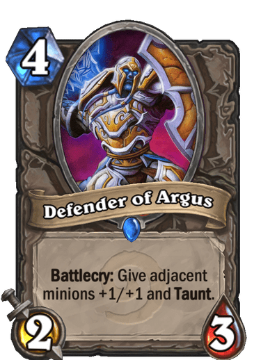
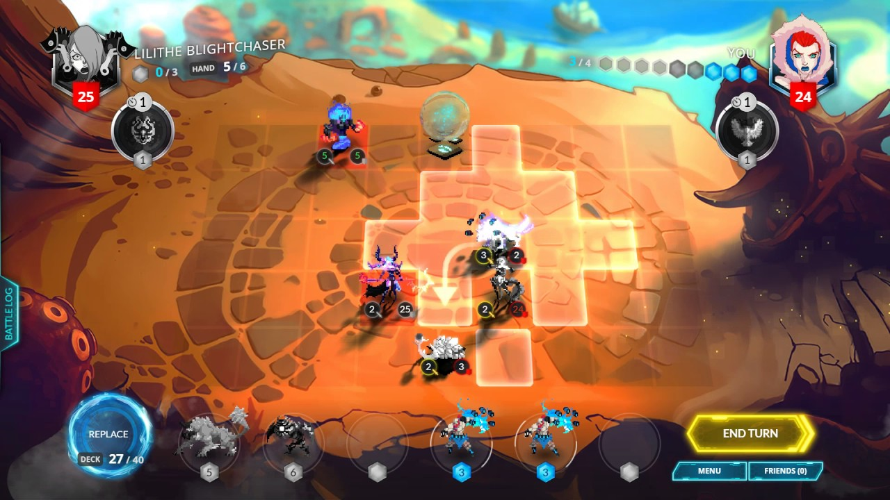
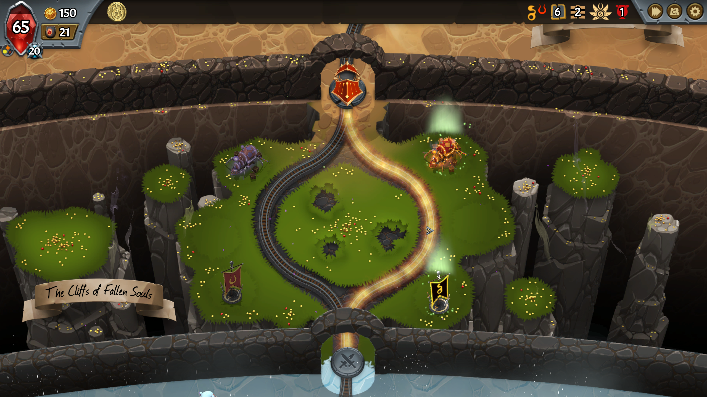

6 - Monster Train
Published 2020-06-04Hi friends. Welcome back. My usual nights for writing have been a little busier of late, since we've been doing board games Tuesdays and Thursdays, but now I'm back and ready to write some more! Today's topic is an indie game called Monster Train.
What's a Monster Train?
Monster Train follows an interesting timeline. The forces of Heaven, known as the winged, have defeated the forces of Hell. Now Hell is frozen over. This is unfortunate, since the dynamic now lacks balance. Fortunately, a small shard of Hell's Pyre remains, and if we can just get it back there, we can reignite the fires. The way we accomplish that is on a very tall train (4 levels!) called the Boneshaker.
That's the lore. The gameplay is inspired. I still don't understand what makes it so addictive. If you've ever played Slay the Spire, it's a similar concept. You have a deck of cards. You have no shortage of enemies, and a fairly small life total. Add, upgrade, and remove cards from your deck to make one strong enough to beat everything you come across. However, there's an additional element that slay the spire does not have. Monster Train adds a 2 dimensional grid for units to fight across.
A 2d grid adds more strategy
If you've ever played a trading card game (I'd suggest Magic the Gathering: Arena if you'd like to try!), you often lay your cards out in a grid. In Magic and similar games, this is out of convenience (lands go behind creatures just to keep them from getting mixed up).
Blizzard's Hearthstone: Heroes of Warcraft, added a single dimension: order. In Hearthstone, units and spells can buff and target multiple things in a row or beside each other. So a Defender of Argus, for example, gives adjacent minions extra stats and a keyword: Taunt.
Hearthstone gained a lot of strategic depth from cards that care about the locations of other cards. During their single player campaign, there were several enemy heroes that only affected the minion farthest to the right.
Another trading card game that used a similar concept was called Duelyst. I say was, because Duelyst didn't make enough money to pay its developers, despite being a beautiful, thinky strategy game. Duelyst had you place units on a 2d grid. Each turn a unit could move 2 spaces in any combination of up, right, down, or left. Once a unit had moved, it could then attack anything close enough. Having the 2d grid let Duelyst enable a lot of interesting gameplay. On the map were 2 orbs that contained one energy. First person to charge the middle could get one of those orbs and have extra energy to play units and spells. Some spells would create walls that made it harder to walk where you wanted to go. One unit would create ranged units in every open corner when he died. You could surround a creature or general completely and then they would be unable to move anywhere. I was quite sad to see Duelyst go, I really enjoyed it.

Tell me more about this Monster Train game
You got it. In monster train, you play as the forces of Hell.
Gameplay
The Boneshaker (your train) has three levels you can place units on, and a fourth level that contains your Pyre. Before each turn, units of the Winged will spawn on the bottom floor. During your turn you play units and spells from your hand using "Ember", which is this game's mana. When you click "End Turn", the enemy units attack, then any of your units that survived hit back. Once combat is resolved, the surviving enemy units move up a level in your train. If any enemy units get up to your pyre, they attack it and it attacks them until one or the other dies. If your pyre dies, you have lost the run.

After each battle, you get a chance to regroup and add, upgrade, and remove cards. Winning a battle gives you some gold, and a pack of (usually spells) for each of the two factions you're playing (we'll talk about the factions in the next section). In between battles, you get the choice of one of two tracks to go down. Tracks can offer unit drafts, which give you a choice between units of the same faction. They can offer gold, the ability to remove 2 cards from your deck, or the ability to make an exact duplicate of a card. Tracks can offer shops, where you can pay to remove cards or upgrade them with runes (each card has 2 upgrade slots). Or tracks can have a "crystalline caverns", which is a random beneficial event.

There are three kinds of shops. One sells only unit upgrades, like +10 attack, +25 health, or a keyword like multi-strike or endless. One sells only spell upgrades, like making a spell cheaper or making it deal more damage. And the final one sells artifacts, which are passive effects that last for an entire run. One relic gives your basic units, train stewards, multi-strike and damage shield 2. Another gives all your spells +3 magic power. Yet another gives you one additional capacity on each floor.
Factions
There are five factions (clans) in Monster Train, and you start with 2 unlocked. Minor Spoilers ahead, turn back now if you want the locked factions to be a surprise! The factions are as follows (in the order you unlock them):
The hellhorned are your first and most basic faction. Their hero can get multi-strike, some buffs on kill or taking damage, or flat damage on kill. Units are a mixture of demons and imps, and spells are basic targeted direct damage spells. The faction keywords are Rage, which is a decaying attack damage buff, and Armor, which is a flat temporary hit points. Imps deserve special mention. They are always 1/1, which is pitifully low (the humble train steward is a 5/8), but they always come with a spell-like effect upon summoning them. There are also many spells that interact with them.
The Awoken are your second faction, and both my wife and I's favorite. Their hero has no attack, but can be upgraded to deal damage when it is healed, draw when it is damaged, or have a lot of spikes. Units are a mixture of weak units with strong keywords and strong units who start with health missing. Spells are buffs and healing. The faction keywords are Regen, which is a decaying heal that happens after combat, and Spikes, which is a flat amount of damage dealt to attackers. Awoken pairs well with all other factions because the hero and many of the units are quite tanky, so you can let the other faction's units shine without fear of them dying.
The first unlockable faction is the Stygian Guard, which are the spell casters of the bunch. You unlock them by playing spells. Their hero can cheapen spells, apply frostbite, or apply spell weakness. Frostbite is a decaying damage over time, similar to Slay the Spire's poison. Spell weakness is consumed when you use a spell to multiply the spell's damage. Some units are weak units with sweep (so they hit all enemies on the floor instead of just the front one) that also apply spell weakness or frostbite. Others have incant, which triggers a small buff when you cast a spell on the same floor. Stygian spells mostly hit the front unit, but they hit incredibly hard, especially when paired with spell weakness. A few spells also have the keyword offering, which means you play them if they are discarded (similar to madness 0 in magic: the gathering).
The second unlockable faction is the Umbra, which are the forces of darkness. You unlock them by playing units, which is fitting. Their hero can expand floors to hold more units, gain trample so his attacks spill over onto later units, or get additional health and damage from eating morsels. Wait, what are morsels? Umbra can create tiny units with weak stats called morsels. At the end of combat, all morsels are eaten by the front non-morsel unit for buffs. Umbra units either have the keyword Gorge, which does something when they eat a morsel, or help you get more morsels on the field. Umbra spells are mainly concerned with creating morsels and unit capacity. Each unit has a "width", which you can see at the top of its card. You start with 5 capacity on each floor, and other factions can only increase it after a boss.
The final unlockable faction is the Melting Remnant, who are sentient candles. You unlock them by killing things, which is once again fitting. Their hero can gain burnout and major stats, a health buff when units die (Harvest), or an after combat effect that Re-forms a friendly unit that has died. Burnout makes a unit only last a few turns before dying automatically. Harvest effects trigger when any unit dies on this floor. Reform recreates a unit with better stats and another level of burnout. Melting Remnant is the only faction whose starter card is a unit, the lowly Dreg (9/3 Burnout 2). Other Melting Remnant units are attackers with short fuses, bombs that trigger on death, and cards that give you bonuses when units die. Spells are mostly unit buffs and spells to reform dead units.
Structure of a run
When you start a run, you pick a primary and an allied faction. Your starting deck contains the hero from your primary faction, 4 train stewards, and 3 of each of the factions' starter cards. Hellhorned's starter card is a targeted deal 2 damage spell. Awoken's is heal 2, add regen 1. Stygian's deals 6 damage to the front enemy unit. Umbra's creates a basic morsel. Melting Remnant's, as mentioned above, is a unit that dies quickly.
At the start of the run, you get a hero upgrade and you get to choose an artifact from 2. Then you go into your first battle. Your third battle will be with a proper boss, who sticks around the entire fight being annoying instead of just showing up at the end of the fight like the previous mini bosses. This same structure repeats 2 more times for a total of 9 battles and 3 major bosses. The final boss is Seraph, and many of my runs have died to him.
After a run is over (win or lose), you gain experience based on how well you did. That experience applies equally to both clans you used, and leveling them up unlocks new cards and artifacts. If you win at your highest covenant level, you unlock the next covenant level, which allows you to make future runs harder. You also "master" cards, which turns their border gold. It's a nice, easy way to see what cards you've had success with so you can try new strategies.
All this information is presented in a nice, easy to read way in your log book, which you can view from the single player menu. It shows what faction combinations you've won with, what covenant level you and your friends have unlocked, and lots more.

Summary
Monster Train is a super fun and addictive rogue-lite deckbuilder. My wife and I have been having a ton of fun playing it. The developer is still very active (I've already noticed several balance tweaks!) and has an active discord server. If you're interested, go buy it right now on steam! If you're still not convinced, I'd encourage you to check out the Canadian streamer NorthernLion, who got early access to the game and is currently doing a whole series on it. Thanks for reading!
◆